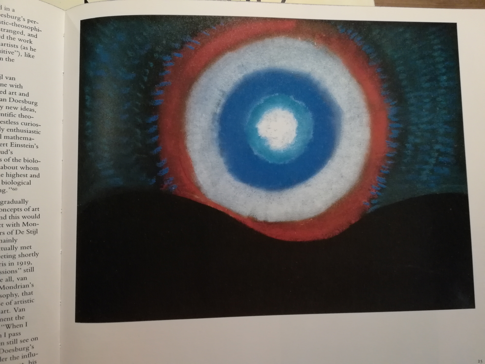
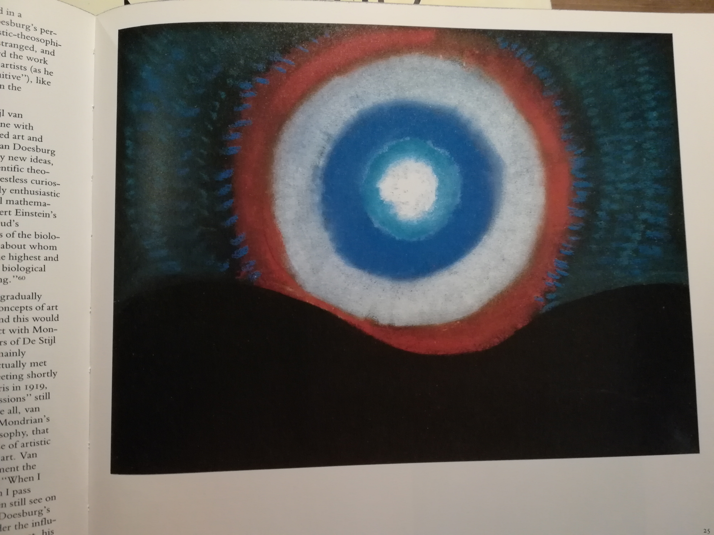

 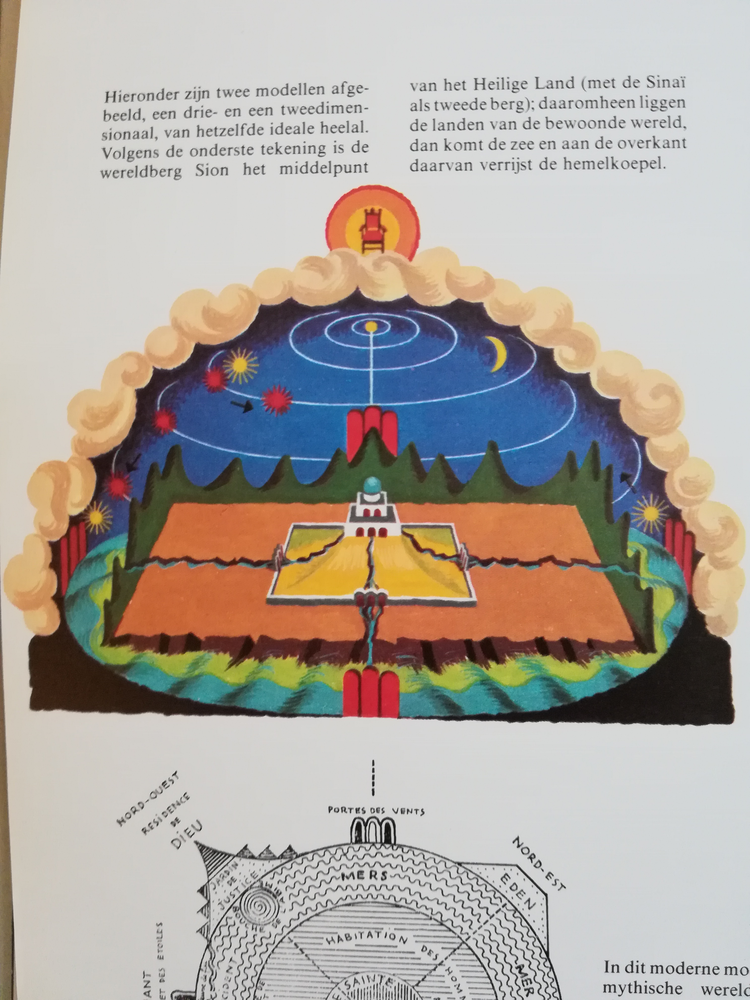
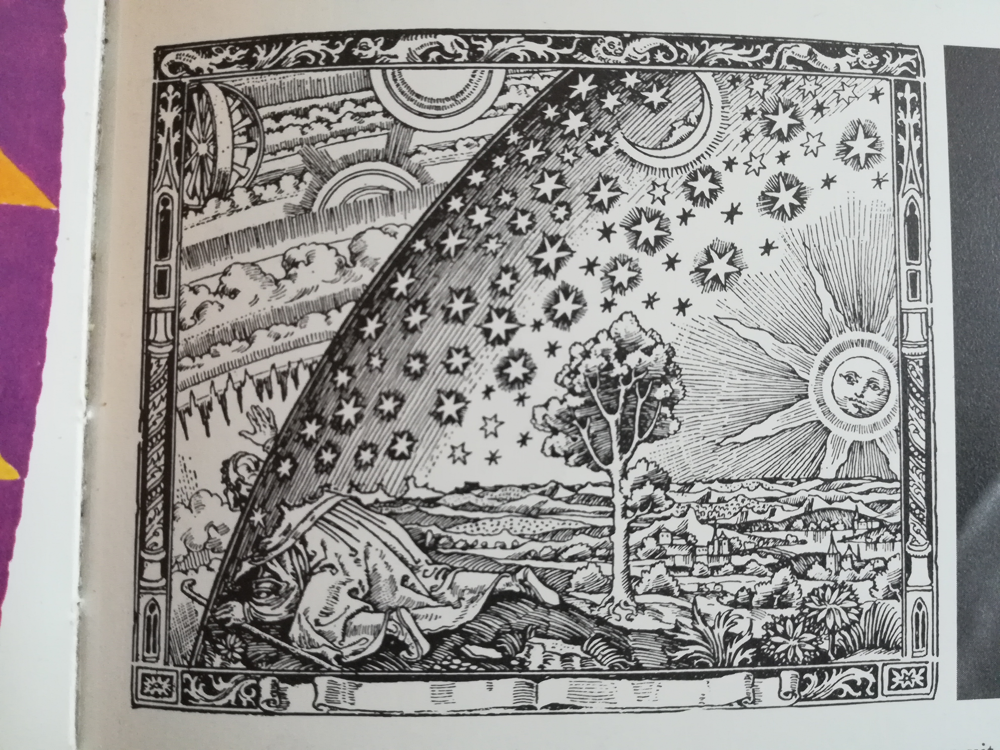
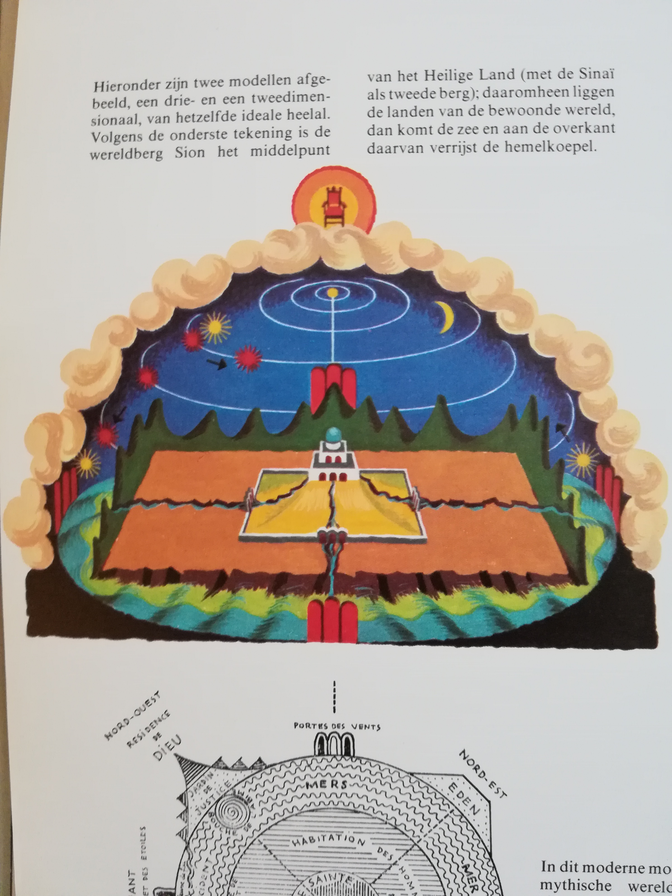
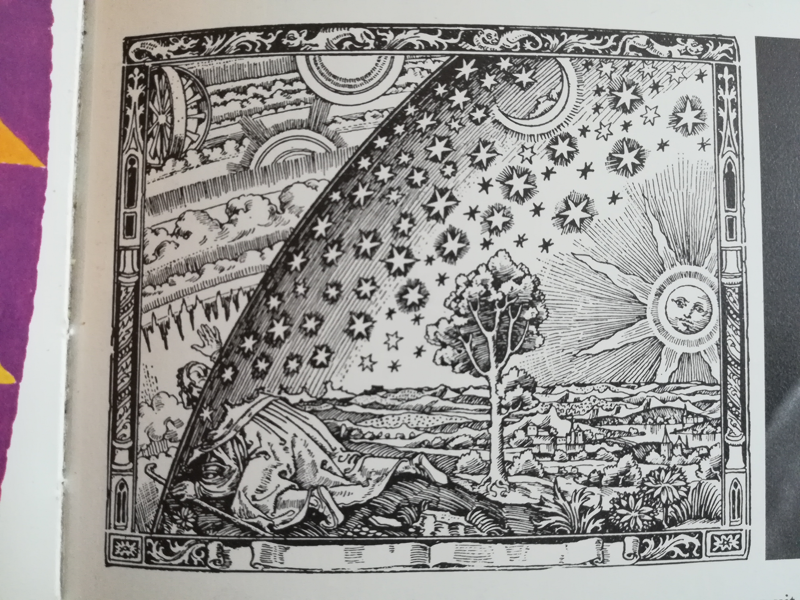

 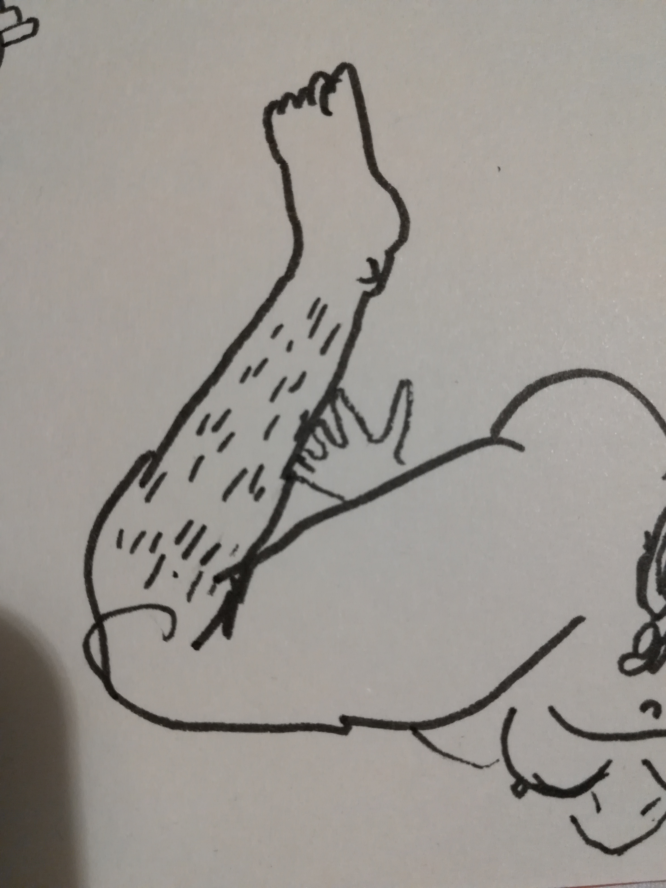
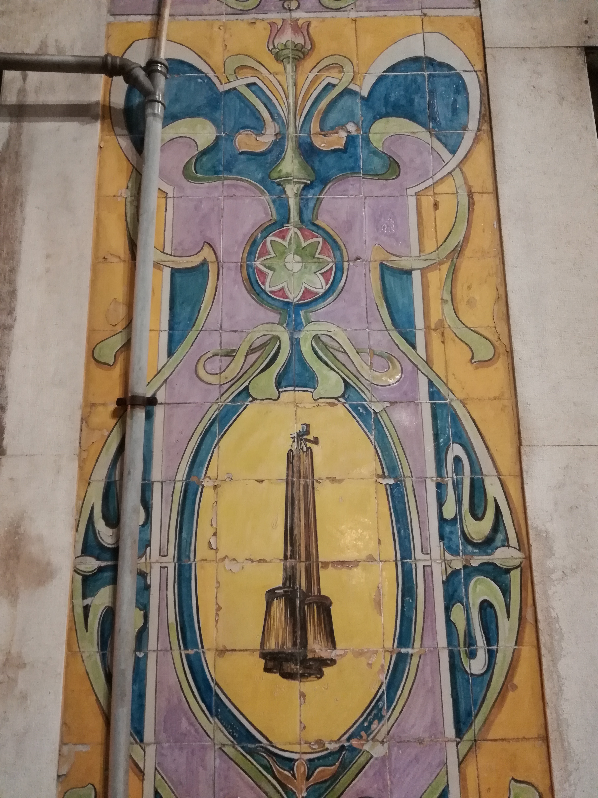
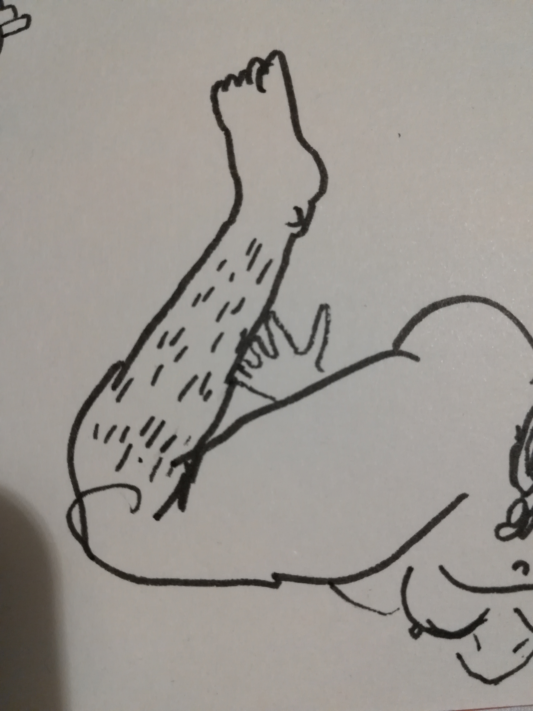
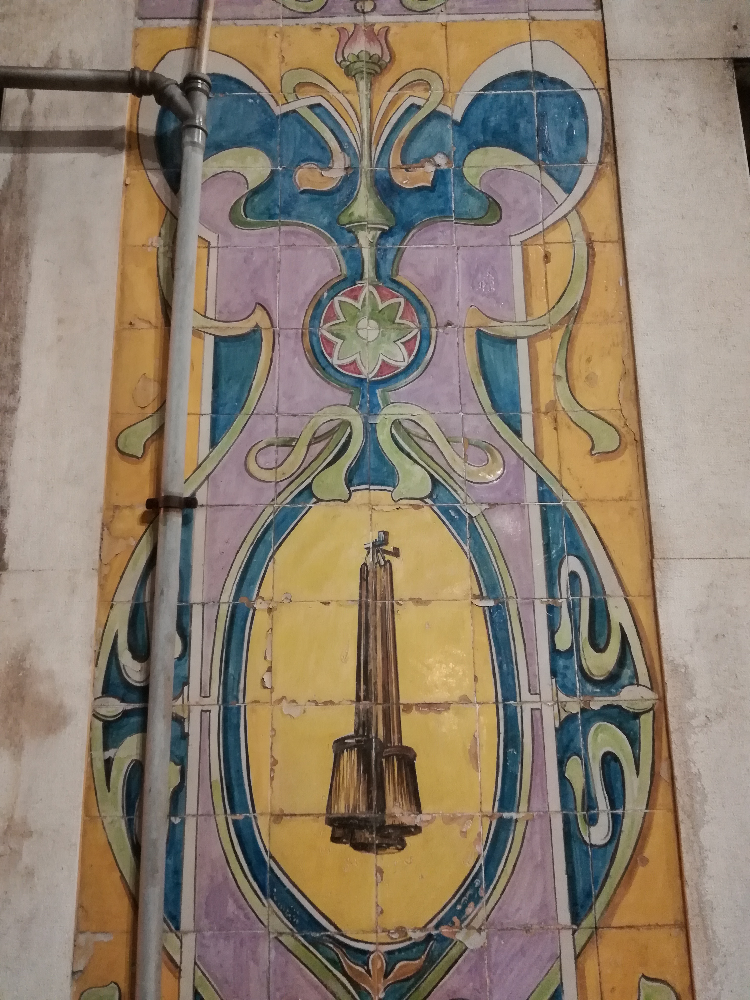


Preface
In this thesis I will guide you through my artistic research about mythology, fairy tales and it’s imagery and symbolism to see what ways are used to pass on these stories that are connected to society in the way we think and live. More
specifically, I want to know how mythical thinking and it’s belonging symbolism have been used to express and change women’s position in western society.
I will explore this by going through different aspects of how womanly culture has been expressed through the telling of stories in both image and speech. The link between fairy tales, mythology and folkloric tales for me is that these are
all stories belonging to a specific culture containing lessons on existence of the human being, how to treat each other, the values and norms of that culture etc. It is a way of passing on these values en norms in a somewhat fantasized way
to make people aware of these values without actually having to lecture someone. The stories are meant to inspire, to help you recognize yourself in aspects of the storyline and to make you wonder if you could act the same as the hero’s and
heroines. That is why, first, I will be looking into what these stories meant in the daily lives of people from the past, in what ways they controlled their lives and how we deal with their legacy nowadays.
Then I will be exploring different artists and writers that use stories, imagery and knowledge retrieved from age old sources, to explain how they look at and try to change, women’s position in society. Hereby I
will show the importance of mythical thinking and the passing of stories for influencing the lives of women and helping women finding their voice in a society which, for centuries, has seen them as lesser than man. I will be discussing
several female artists from the 60’s and 70’s that use ideas of the Supreme Mother, goddess worshipping and other themes coming from mythical thinking involving power of the female and the role women are given in society nowadays. I will
also be going into the relevance of fairy tales and how the passing of these stories have been a tool for women to inform each other and make themselves protagonists, hereby making their mark on history.
For over two years I have been drawn to looking at, and making imagery on the stars, the sun and the moon. I didn’t know more of it than it being celestial bodies that you can see when you look up in the sky, but through this research I came
to a better understanding why this imagery triggers me so much. I found that in a lot of cultures around the world, the representation of the moon holds special meanings in terms of female power. The symbol of the moon was used for multiple
goddesses whom were greatly honored in their capabilities of bringing fertility, creator and life giver. The last chapter will therefore be on the different meanings and values people have given to the symbol of the moon and how artists
nowadays are still working with cosmological symbolism, coming from myth and folkloric tales, to be able to speak their minds on developments in society today.
By going into this topic I am finding out where my fascination on working with the human body and sexuality comes from. How are women portrayed through history, and how did they put themselves on the map? Were there times that the sexuality
and sexual activities of women were fully accepted? What role does storytelling play, and what ways of storytelling have been used to address this topic? Why is it often still a taboe to talk about sexuality, to act on your sexuality as a
woman, while for men this has always been an easy topic? These are all questions that I hope to answer in my upcoming graduation project.
I guess for me working with a thing like sexuality is fun because it kind of shocks people. I like peoples reaction when they all of sudden see a blowjob seen in a movie about a very neat cat lady - cheeks turning red, awkwardly staring at
the screen, shifting on the chair from slight embarrassment. It often makes people somewhat uncomfortable while sexuality is really something everybody engages in. This thesis made me see that you can use sexuality in very direct ways but
also on a way more abstract level - by using symbolism for example. This is important research because it is really on how to express your values on life through the telling of stories in different media. Since I am strongly thinking about
making an animation on female sexuality as graduating project, it is important for me to learn how people told their stories on the female position in society before me, so I can take certain aspects of this with me and try to incorporate
this in my own way of storytelling.
1. Mythical Thinking
We live in a time where societies don’t have a central believe any longer because of globalization and individualization. The spiritual seems to be lost. Disenchantment brought uncertainty since people have always relied on some sort of ideology to guide them in terms of identity. People start looking for salvation again in a society where there is not one overarching framework to explain the world around them. Chaos is a key element in a society let by individualization. In this global community we are living in, ideologies no longer seem to exist in such direct ways. However, religion and mythical thinking still have a structuring force for society and the individual. This is expressed in the narrative, performative and symbolic field. It gives an explanation for existence and offers guidance for fulfillment of life.1 What has mythical thinking been about?
Every nation and every society has their own founding folkloric myths upon which society relies for communicating and encountering with each other. These stories always contained some sort hidden messages and of life lessons. It’s a way to explain the world around them. Already from a very early stage in human societies, people have tried to connect their own lives to something bigger and greater than ourselves to try and understand the meaning of life.Regularly there were symbols used to show these connections to others. Today a myth is often seen as a common, unimpeachable, but unfounded view. The whole of myths of a people is called mythology. It is this mythology that gave people insights about the origin of the world, the skies and natural phenomena like snow, thunder and earthquakes. It was the base of the first religions. A guide to live your life. Before these stories were written down, they were passed on to each other by speech, mother to daughter, father to son. The reasoning of people to understand what stars are, how things around is in nature happen and why we have specific social orders is an explanation on how mythology came to exist.Literary scholar, Joseph Campbell (1904-1987), specialized in comparative mythology and religions, goes into how people started to come up with a thing like mythology, and how this way of thinking in some sort of supernatural power has shifted through time into a way of thinking that we ourselves are maybe this power. Campbell explains this by talking about the point of gravity of mystery and danger that has shifted throughout history. Primitive peoples saw their danger in animals. Animals were a manifestation of everything that was strange and mostly different. The biggest task was to psychologically prepare yourself that you had to share your space with these creatures. Therefore an unconscious identification with danger and mystic took place. The peoples made this identification conscious by creating myths around it. In this way they also identified with plants. They came with rituals, like harvesting to honor birth, reproduction and maturing. After a while, when these myths were well integrated in society, the mystery shifted towards the heavenly bodies; astrology and astronomy started to come up.
There came another shift, from the heavens to the earth: 17th Century astronomy shifted to biology in the 19th century. Now, the cosmic forces to which existence is subjected are explained as self-explanatory in an almost mechanical way. The mysteries have lost their powers.2 We are now in an interesting time where the shift of science towards the individual is being made. That is why Campbell speaks of a modern hero task. This would be a way for people to again reach the full potential of growth within the circumstances of the modern times, since the new circumstances of the modern times took the effectiveness of the old formulas - mythology.
When the dreamweb of mythology fell away, the mind opened itself to be fully aware, Campbell argues. The hero story of humankind in the modern world became one of maturing. Because of science the human life changed drastically and our timeless, inherited universe of symbols crashed. Before, when society was based on mythology, all reason was focussed in the group, in large anonymous forms, and no act was based in the self outing individual. Since the loss of mythological thinking this has shifted to a solely individual way of reasoning. But this reasoning is completely unconscious of itself, because we no longer know what is our driving force, or what we are even looking for.3 Did we arrive in a time where we see ourselves as driving force? We might have come into an age where the people themselves can make rules to follow instead of listening to some sort of ideology on how it should be: Women found a way to speak up with new kinds of ‘religions’ like feminism. After centuries of suppression we found ways of expressing our needs and demands on equality. Disenchantment gave space for this kind of activism to grow considering there is not one way of thinking and executing ideas any longer. But it doesn’t mean that there is no more mythical thinking. Today’s mythical thinking is somewhat different from before.
Yuval Noah Harari speaks on the change in mythical thinking in his book Sapiens, A Brief History of Humankind. I think he gives a nice argument on how speech and the telling of stories and the development of mythological thinking are very important parts of human society. People, sapiens, were able to concur the world because of their unique language. Every animal species has a form of communication, but the special thing about sapiens is that we are primary social animals. Social collaboration is crucial for survival and reproduction for us.
One of the theories why we as sapiens evolved such specific languages is the gossip theory. Sapiens are very eager to get and spread information about other individuals in the society. Monkeys also have the urge to share this personal information but sapiens managed to develop this urge into something else: The most unique thing about our language is the ability to transfer information about things that are not there. So where monkeys can communicate to each other that there is lion approaching, sapiens were able to communicate to each other that lions are their protective spirit for example. This is how, during the cognitive revolution, religions, legends and myths came to exist. Because of the ability to believe in made up things we are able to work together in big groups: we believe in these things collectively. This is how we found a way as sapiens to connect with large amounts of individuals without having to have direct social bounds. If we compare this to animals we see that they can also work together in groups, but that’s either in very strict ways (like bees/ants) or in groups that are a maximum of 50 animals, in the case of chimpansees. Scientist have pointed out that if a group becomes larger than this amount, the social order in the group gets out of balance which leads to fights and groups splitting up. For people there also seems to be an average of knowing 150 people effectively to gossip about. However, the fact that we can live in million cities is because we made up fiction stories for us to believe in collectively. By believing in the same thing, may it be a god, a company, a legend, laws, two strangers can successfully work together. Primitive peoples bonded through dancing together around a fire, but nowadays we still collectively believe in myths: modern institutions function in exact the same way says Harari. Now it just took the form as something like a company. The myths turned into juridical fiction. We are still living in imaginary realities: fictions that people made up which gained excessive power. 4
2. Talk That Talk
The mutability of myths makes it a useful tool for those who want to reimagine the relationship of gender to power, political subjectivity and resistance.5There is a relative scarcity of sources about historical women, but classical mythology is a field which is full of richly drawn figure females. These are figures who exercise a degree of power that appears outsized in light of the limited roles of women in ancient communities. There are numerous theorist that are researching theories of a lost matriarchy, the matrixculture. A matrixculture is a hypothetical form for society in which women and the womanly culture dominate. The idea of the matriarchy seems resilient since there are still people writing about goddess worship and contemporary Goddess Movements. Jane Ellen Harrison’s for example, who was one of the first female academics and a founder of modern studies in Ancient Greek Religion and Mythology.6 As a suffragist she also actively defended women’s rights. Not as an attempt to overrule manhood and emphasize womanhood to try and restore matriarchy, but for something bigger than this: humanity. Luce Irigaray, a Belgian philosophist and feminist, who has written that Freud, forgot
“…an even more ancient murder, that of the women-mother…”
when he talked about the primal murder of the father figure.7 Adriana Cavarero is an Italian feminist philosopher who built on the work of Irigaray, working on stealing back the figure of the mother in the matricidal tradition of early Greek myth and philosophy.8 For both these women, Greek mythology is a valuable discourse because it conserves the memory of a world before patriarchy.
It’s interesting that people always go back to telling myths, especially when looking at feminism: The old myths are often a jumping off point for rewriting and creative development as material for new narratives. Also in feminist art these themes are a reoccurring field of interest, since so many of these myths support the most basic negative assumptions about women. Then why go back to these stories? Holmes explains this phenomenon well: Myth is slippery, always created anew in variants and retellings.
“It turns out to be tailor-made for appropriations designed to shift angels of viewing, explore gaps, and divert outcomes.” (Holmes)
This flexible nature of myth, the ability to adapt to various social contexts, was something that the old Greek and Roman philosophers already gladly incorporated. This could also be a reason why the roles of women and their importance in society has been driven down in certain stories. If a poet or writer in service of a certain person in power needed to make a point, it was easy to write down the myth slightly different, changing the part of the woman if necessary and therefore empowering patriarchy.
Clarissa Pinkola Estes, a psychoanalyst and teller of stories, also points out that stories have often been shifted into more appropriate stories when the catholic church began to rise. The sexual parts and any power that was originally given to the women in the stories was retrieved, making women submissive beings.9
2.1 Something Bigger
There is a rise of modern and post modern artists, feminists, that try to arrange for conditions that allow myths to be inhabited from unexpected angles. To investigate them from a new point with new meanings. This doesn’t have to mean that we are looking for a recovery of the lost utopia of the matriarchy. But we can learn and try to see the happenings from the past in a different light to make sure that women now can reclaim some of this womanly culture to secure their own position in society.10This showed during the 1960’s when feminism really took rise among a wide audience. There were multiple female artists that found new ways of expressing themselves, for instance through performance art in which they often used mythical values. These weren’t the direct stories about goddesses and didn’t necessarily show the specific symbolism that had been used in these mythologies, but they often build on the idea that women have always had a strong connection to the earth, from which we receive and extract certain knowledge and powers so to say. This is an inspiring approach to the topic of female power in society for me. One of the artists strongly working with these topics was Ana Mendieta, a Cuban-American women who came to the USA as a refugee when she was 13 years old. She is strongly connected to the feminist art movement during the ‘60s and ‘70s due to her performances and photography on prejudice and violence. She wanted to pierce through perceived differences on themes like gender and race. She tried to answer her questions on identity through Latin American mysticism.
“I decided that for the images to have magic qualities I had to work directly with nature. I had to go to the source of life, to mother earth.” (Mendieta)
She often appeared naked in her works, to depict both being present and being absent, as a way of linking the human to the ethereal. In her work she tried to push people to connect more authentically with each other and understand that we all together are one within humanity, that we are connected to the earth: the Supreme Mother to all. She tried to let people see ‘other bodies’ as their own. The dialogue between the body and landscape, mother earth, womanhood, and the inevitable cycles within life and nature are reoccurring subjects in her work.
“The obsessive act of reasserting my ties with the earth is an objectification of my existence.” (Mendieta)
Visual presentations like the female body and earthly materials remain constant over time, so they get a universal energy to it, yet are still approachable to social, feminist and political concern.11
To me, her way of connecting herself to the earth, showing the female body as the Supreme Mother is the link between mythical thinking and her art. It listens close to goddess worshipping and maybe even ideas of matriarchy where not only goddesses but women held great power and were closely linked to the earth.
Merging with the earth became some sort of metaphorical return to ‘the mother’ for Mendieta, and through her art she tried to show that this merging shouldn’t be just something for her. A ritualistic worshipping of a universally feminine earth goddess. This process and worshipping really shows in her Siluetta Series. By making these ritual homages she embraced her own feminine spirit and tried to show that this feminine mysticism is in all women. Her passion for religious rituals showed from her use of organic materials like mud, fire and blood.
Another piece where she works with these earthly materials is ‘Body tracks’ which was performed in 1976 and 1982. In this performance she walked into a room, covered her arms in animal blood and then put her hands on a white canvas. She then dragged her arms down the canvas, leaving a trace of blood that resembled her bodily movements, almost looking like a primitive form of figuration. She used blood also in other works as a kind of provocation to get people talking about domestic violence and address happenings like rape. Here it is again not a clear, direct link with mythology, but the fact that she uses specific materials and creates a holistic ritual puts in line with mythical themes and worshipping of the female for me. It is this way of making a ritual that is her way of telling a story on how women are treated, and pointing out that this is not the way it should be.12
The way Mendieta works with connecting herself and the body to a larger thing - the earth, the Supreme Mother - listens close to something Campbell calls the Super Human to me. According to Campbell’s theory, human beings, individuals, are never the total image of a human/people. We are always merely a fraction of this people. The totality of a single individual lays in the ‘body’ of society as a whole: The individual is merely an organ. Through the history of the society the individual receives language, genes and ideas where it thrives on. Through rituals and ceremonies an individual is able to see an enlargement of the self in which it can see the ‘Super Individual’. Then the individual is able to see it’s role as part of the people. As there are rituals for people to see their role in society, there are also rituals to see that people are simply a part of a much bigger cosmos; the seasonal rituals. These aren’t there to master nature, as some think, but to show our inevitable submission to fate, the continuity of seasons.
“Many of the feminist artists, writers and philosophers who have turned to classical myth have been driven by the desire to embrace the past not as foreign or distant but as the source of rich material for exploring and challenging sexed and gendered identities in the present. The license for free-form inventiveness that myth provides creates an opportunity to make the past one’s own.” 13 (Holmes)
Carolee Schneemann is a feminist artist that till this day investigates and challenges gendered identities. In one of her most memorable performances, 'Interior Scroll (1975)', Schneemann came into a room where, after she undressed herself, painted herself with mud from a bucket and read from her book Cezanne, She Was A Great Painter. After that she slowly started to retrieve a scroll of paper from her vagina whilst reading what was written on the paper: A text that she wrote as response to the critique she got from a male artist attacking her by saying she made messy, female work. The idea for this performance came from a dream she said. The whole thing was about extracting a source of knowledge from her other ‘mouth’, hereby seeing the vagina as an architectural reference to the source of sacred knowledge, euphoria, birth and transformation. Hereby she created some sort of ritual to worship the female genitalia seeing the vagina as a Goddess of knowledge. Seeing the vagina as Goddess of knowledge links back again to the idea of worshipping the female body in a mythical way. This could also link back to what Freud said on how mythology and dreams are related to eachother.14 In a sense Schneemann made her own mythology by pulling that scroll out of her vagina. This was really her way of showing what she wanted as it literally appeared to her in her dream: for women to be seen as equal and full of knowledge. Schneemann’s work in the 1960s and ‘70s could be seen as explorations to open up the conversation on about sensuality and sexuality, as investigation into the taboo on the possible liberation of the sexual female body. She was examining the role of female sensuality and it’s relation to political and personal salvation from the social and aesthetic conventions. By showing nudity she wanted to take away the pressure and stress around the female body. She worked with themes of everyday erotics as well as generations and goddess imagery. The critique she got from the male art world was that it was narcissistic and self-indulgent, because they couldn’t see that nudity could actually be used to go against objectifying, due to the fact that this nudity inquires self-ownership and self-definition.15,16 In the performance Meat Joy (1962), where she worked together with New York’s Judson Dance Theatre, she tried to show the power structures in society between men and women and what would happen if you take them away (img 32). A place between desires and experiment. The performance showed that even removing boundaries can deepen existing power power politics rather than eliminating them. This was demonstrated as male participants threw women over their shoulders and proudly paraded around.17 To me this is an interesting work to mention because although Schneemann uses mythology to express power of the female entity, it has also been a construct for society to undermine women and support society the way it is. Hereby she shows the dark side of it in again a different way of storytelling and performance. My reason for showing these artists is because they inspire me in the way they implement their own perception of what role women can and should have in society by indirectly using stories that are widely known in a very direct way. Although their way of working, the performative side of it, is not something that I would do myself. But the way they talk about the work and the ideas behind it are really interesting and make me think about making my own pieces in different ways as well. Embracing your feminine spirit without prejudice from the outside world is something that I would like to achieve through my work.
2.3 Perforating Prejudice
Breaking prejudice is something the feminist artist Hannah Wilke (1940-1993) also strongly tried to show and achieve in her art pieces. Hannah Wilke started working in the 60’s. The objectifying of women and prejudice that comes with this was a big theme. She showed this in many ways, often by using her own body as a performative tool.In the project Starification, she posed naked as if she was a super model. From chewing gum she made little sculptures of the female genitalia “to wipe out the prejudices, aggression, and fear associated with the negative connotations of pussy, cunt, box”, that she put all over herself, hereby criticizing mass media and the demand for women to look a certain standard. The use of a malleable substance like gum was to show on one hand the stereotyping of women and on the other hand the vulnerability of women. She got a lot of critique on the works in which she used her own body. A critique on her book ‘Marxism and Art: Be aware of Fascist Feminism’ was that she was just maintaining patriarchal ideas about women, because since the Renaissance women’s bodies had always been on display in the Western World. But it was merely through taking control of her own bodily representation that she could talk about and get attention for the objectification of women in broader perspective.
She kept on working with these subjects till her last project, Intra-Venus(1991-1993). A word play on the decay of her own body and a question to society to think about the objectification of womanly bodies: as soon as women get old and don’t have the perfect ‘Venus’ body any longer, typical for the artistic representations of women, it gets put away, out of sight. She shows her own body, undergoing chemo therapy as the Venus body, with the tubes going in her veins. By this she shows that the constructs of mythology are complicated: Venus was seen as the prettiest of all goddesses, the ideal body. With this she makes a very direct connection to mythology. The prevailing of such stories could be seen as a direct form of objectification of the female body. But by showing herself in such a fragile state in a later stage of her life, she tells us that whatever you may look like, you, as a woman, as a person, are good, no matter if you are ‘ugly’ or ‘beautiful’. To be confident in your body then becomes one of the most important features.
“The work makes a strong feminist statement in the challenge it poses to societal expectations about the female body - the discomfort caused by images of a less-than-ideal body.”
To me this is an interesting artist because she works on a level with themes like femininity and objectivity that is not directly understandable for everyone. This shows in the way people reacted on the works where she appeared naked. On the one hand it was actually quite an indirect way of outing her concern about the way women are portrayed, since the people that she wanted to persuade in a different way of thinking did not understand it. On the other hand, it is really direct because she literarily puts herself out there showing it exactly the way it is. She works with a shocking effect to give an extra impact to the work, something I enjoy exploring as well. Therefore her work fits well in my research on how to work with mythological themes to try and make a statement, tell a story, on the position of the female and the way people look at the female body in society.
2.2 Fairy Constructs
Taking the past as material for research on gendered identities is something Marina Warner embraces in her work as a writer of fiction, criticism and history. In her book ‘from the Beast to the Blonde’ she exposes a way of looking at fairy
tales where women and their way of communicating become the most important factor in the stories rather than the happily ever after endings.
The word ‘fairy’ has a meaning of wonder. It could come from the latin word ‘fata’ which means fate and refers to the goddess of destiny. Fairies resemble the goddess for they know the course of fate. Warner explains how fairy tales themselves
also take on this role, even if no fairies appear in the tale: They act to caution listeners and to guide them to what may come.
It is difficult to figure out the etymology of ‘fairy’, because the ultimate source isn’t easy to find since telling stories used to be an oral tradition, and from the moment the stories were written down, the collectors almost never wrote
down the names of tellers. The earliest female resources written down by men can be found in the 16th century. Ofcourse it seems ridiculous to say that storytelling has been a exclusively female activity, “but it’s worth trying to figure out
in what different ways the patterns of fairy tales romancing might be drawn when women are the tellers” (Warner p19).
Because the lessons on jealousy, kindness, cherishing, integrity and hatred are things that people look at for universal significance, there seems to be less focus on the equal power of fairy tales to illuminate experiences embedded in social
and material conditions. These conditions change over time. This is something in which fairy tales and myths match. The historical interpretation of tales reveal how “human behavior is embedded in material circumstance, in the laws of dowry,
land tenure, feudal obedience, domestic hierarchies and marital disposition”(xii, Warner).
And it shows that when these circumstances/conditions change, behavior may change with them.
“Fairy tales offer a case where the very contempt for women opened an opportunity for them to exercise their wit and communicate their ideas: women’s care for children, the prevailing disregard for both groups and their presumed identity with
the simple folk, the common people, handed them fairy tales as a different kind of nursery, where they might set their own seedlings and plant their own flowers.” (Warner)
Warner gives Snow White and the Huntsman as an example for this: The
heroin must stay a role model for the independent woman and is therefore not to marry the prince or the pauper. This way the story doesn’t necessarily get a happy ending, but, women could get their point across that a woman can be
self-reliant.
By reading fables and fairy tales it seems like we willingly become children again. “Fairy tales represent childhood, that vividness of experience in the midst of inexperience, the capacity for daydreaming and wonder.”(Warner) Shape shifting is
one of fairy tales dominant characteristic wonders. To wonder is the receptive state of marveling as well as the active desire to know, to inquire. Fairy tales contain the pleasure in the fantastic and the curiosity in the real. Fairy tales
and metamorphoses seemed to offer the possibility of change for Warner. Not only in fairy land, but also in this world. It gave her the feeling that the stories could “…remake the world in the image of desire” (Warner). A blissful dream that
shouldn’t be dismissed as foolish. Warner argues that these kinds of changes were very real indications of life lessons women wanted to pass on to each other to show that they themselves were indeed the ones that could change the fate of their
lives if they wanted to.
Fairy tales aren’t passive or active, they are operative: announcing what might be, not bringing total closure at the end, but they make prophecies and promises on what could be: this is how it is now, or was before, but things can change -
and they might. When researching the meanings of fairy tales it is essential to look at the context in which they are told, who told them, to whom and why. The moral purpose of fairy tales is to show you where boundaries lie, again a way in
which they re similar to myths. Because in tales anything can happen, they can unlock social and public possibilities. Warner quotes Wallace Stevens in her book saying “it helps us to see the actual world by visualizing a fantastic one."
“The enchantments in the tales also universalize the narrative setting, encipher concerns, beliefs and desires in brilliant seductive images that are themselves a form of camouflage, making it possible to utter harsh truths, to say what you
dare.” (Warner)
Warner explains how the stories were used as a way for women to communicate their truths to a younger audience. Sometimes these stories were written and told as a rare testimony of wrongs and ways to right them. They were told in
the spirit of revolt and protest. By wrapping them in fantasy and unreality the tales could be spread widely; in Salons and on town squares. This way the greater purpose to reveal possibilities, to map out different ways, new perceptions on
women skills, love and marriage could reach a big audience. Tales, stories and myths have in this manner always been advocating means of escaping imposed limits and prescribed destiny.
This is something Natalie Frank tried to show in her book: Tales of the Brothers Grimm (2014). Frank draws special attention to the roles of women in the original form of these fairy tales. She shows the characters as complex Feminist
protagonists. The foremost Grimm scholar, Jack Zipes, introduces the book and contextualizes these stories and drawings within a history of the Brothers Grimm, its illustrations, and the tradition of the fairy tale. When Natalie Frank looked
into the unsanitized versions from the the German linguists Jacob and Wilhelm Grimm (1852-1857), she saw reasons for the gruesome endings of the stories. Plots with brutal violence, rape, and the ideas behind shape-shifting and magic: These
tales were means to inform other generations about their place in society, and how to move through a social and political world where women held almost no power over their fates. Frank felt suddenly that the witches, princesses and hags were
grounded. They were there to show other women ways of escaping, but also to inform each other on arranged marriages, death during childbirth, rape etc.
That women were the keepers of tales shows in several literary sources: There are many sources to find which show that women from different social status have been active in the fields of folklore and storytelling. One example of this is on
the Old Wives’ Tale. The moment that plays and stories were printed for the first time in England and France, is when fairy tales became literary tales. Around this time George Peel was the first one to use the term ‘Old Wives’ Tale’ (1595).
George Peel calls this the old wives tale because the plot is told by an old ‘Gammer’; Granny. These words were strongly connected to chattiness. This shows that there used to be a direct connection between the telling of stories and women.
This is a reason to believe that men were largely just writing down the tales while women were the ones keeping the stories alive. This connection shows even in earlier times. Plato wrote in the Gorgias (a socratic dialogue between him and
rhetoric Gorgias) on these kind of tales told by elderly women: the Mythos Graos. The women told the tales to distract the children that arrived at Crete from the grief they felt of going to be sacrificed to the Minotaurus. Next to this there
are different writers that noted that the sources of their tales were mostly women: The Brothers Grimm, Johan Sibelius, Oscar Wilde and Italo Calvino are all writers Warner cites to have had female sources for their stories.
The way Warner and Frank talk about fairy tales shows me that, even though fairy tales seem just fun stories to listen to - even more then myths - they actually carry important values with them. Not only that; they worked as tool for women to
put themselves on the map and to inform each other on dangers in life and ways of escaping these dangers. I also want to point out with this chapter that the telling of stories has been an important way for women to claim power, wether it be
in image or speech.
3. Not Just Magic In The Moonlight
That imagery is also an important factor within mythology is no news. In fact imagery often functions as symbolism in myth and folkloric tales. A symbol that is often used when discussing Goddesses and women within diverse cultures is the Moon.
Moon mythology sometimes consist of dramatic stories because primitive people tried to think of reasons why the moon sometimes disappeared and came back again. Also the phenomena of things like an eclipse and blood moons created intens stories.
The fact that the moon always reappeared is a reason why the moon is associated with the circle of life. Death did not use to be the end, but merely a change of life, or a pause for a new one. The fact that women bled with the moon but did not
die, was also a factor why the moon got a mystic side to it, and why it was often connected to goddesses, fertility and birth. Some say men were actually scared because of this and when language was created they used this to suppress women.
Therefore it is interesting to question the use of symbols within the theme of feminism. How can you convey a message through image that is as strong as words, reclaiming power of women.
Doctor Leonard Shlain (1937-2009) was an author, surgeon and inventor who wrote the book ‘The Alphabet versus the Goddess’, in which he explains how the shift from oral to literacy has upset the balance between men and women. He argues that the
process of learning alphabetic literacy rewired the human brain. This is because literacy reinforced the linear, abstract, masculine left side of the brain, and this at expense of the holistic, iconic, feminine right side of the brain. This, says
Shlain, is a reason for the diminishing honoring of Goddesses, the abhorrence of images and the decline of women’s political power and status in the early literacy stages. This opened up space for patriarchy and misogyny to take over. In line of
this he explains how the teachings of Socrates, Buddha and Jezus were all oral teachings ones, therefore led by the right, feminine brain half. Only when people started to put down these teachings on paper did they evolve in masculine creeds. The
rise of misogyny for example, shows in the Ten Commandments of the Old Testament: the first two commandments reject any goddess influence and forbid any form of representative art. He goes on to the Dark Ages to explain his point further: The Dark
Ages were an illiterate period where “the love of Mary, Chivalry and courtly love”, as Shlain puts it, arose. But it decreased again when the Renaissance arrived with the invention of the letter press. What followed was a Protestant attack on
imagery of Mary and furious witch-hunts.
Then, from the 19th century on, something he calls the Iconic Revolution started: photography was invented which brought us film, advertisement, graphics and computers - all based on imagery. In this he foresaw an
increasing reliance on the right brain which focusses on pattern recognition instead of the left brain linear sequence which will hopefully lead to a equilibrium between the masculine and the feminine, between word and image.
When looking at Shlain’s theory, we could say imagery is an important part of reclaiming the feminine power. By using symbols that have been used for centuries on end there is a possibility to create some sort of
relation between the ‘new’ message and the old knowledge of our ancestors. I am interested in how people deal with these symbols today when connecting these to feminism and if they still have the same connotations as before.
The link between women and the moon isn’t a strange one: a woman’s cycle is around the same length as the moon cycle: 29,5 days. In lots of cultures the full moon is associated with ovulating and the dark moon with menstruation. The idea has been
around for centuries but only in 1971 it was first researched and there are many people that do not believe in these stories.
Psychologist Martha McClintock wrote in her Harvard paper Menstrual Synchrony and Suppression, on this phenomenon of menstrual synchrony. A evolutionary explanation for the synchronization is that it makes sure that the female species isn’t
monopolized by a single dominant male, something that also has been researched in various groups, like baboons, chimpansees and rats. Still, McClintock’s paper has been discredited on methodological grounds and a lot of studies that prove
otherwise. For instance, this new scientific study of a fertility app called Clue in partnership with the University of Oxford, has found data showing women’s periods do not synchronize when they live together after all. The study got 1500
replies, which were narrowed down to 360 pairs of women. The study showed that the majority - 273 pairs- has a greater difference in period start days at the end of the research than at the beginning. It actually showed that women’s menstrual
cycles are more likely to differ than to synch over time. Looking at this study it seems just a myth that periods are synchronized and tied to the waxing and waning of the moon. Probably the myth has always been so believable for women because the
idea that you can share such a personal thing that you go through every month makes it powerful. It gives a feeling of connection and sisterhood, a certain strength. This connection and feeling of power created by the myth is why keep looking for
patterns that may not exist. Still there are also studies that do show some connection between the moon and a women’s cycle. One experiment showed that menstruating has a connection to light, which is called the Dewan effect,: If women with
irregular periods sleep with a soft white light during the 14th,15th and 16th night after menstruating, their period starts to align after a dew months. From personal experience I noticed that my sister, mother and me were always on our period at
the same time.
This Dewan effect would also explain a bit more why there are so many stories to be found on Moon Goddesses, protectors of fertility, sexuality and the cycle of life. One of the oldest and widely honored Moon Goddesses was Inanna. There are images
found that date back as far as 8000 years BCE of a Mother Goddess Inanna. She was a Sumerian Goddess, who was worshipped in the Middle East for a period of more than 4000 years.
She is Goddess of the Morning and the Evening Star as well as the Moon. She was often portrayed with the lunar crescent and a rosette, an 8-pointed star, which represents the planet Venus, because her celestial manifestations are those of the Moon
and the planet Venus. Often she has wings and serpent-entwined staff which tells us about her roots as the Goddess of Life, Death and Renewal. She is connected to the color blue, which reflects the Upper Waters (the skies). The sky was seen as a
manifestation of Inanna herself, with the clouds being Her breasts and the rain Her milk. When humanity started distancing itself more from the natural world, the attitude towards life and death changed. Before death wasn’t seen as the final end,
but merely as place of rest before rebirth. So the underworld shifted from being the womb of the Mother Goddess to a place of no return. This is also how Inanna’s powers shifted more to life-giving, fertility and abundance. This is the aspect of
her that today we most associate with the Goddess as Venus.
In Inanna’s temple, the High Priestress or Entu, was seen as her representative, her incarnation. Every year she would collect a young man lover, to celebrate the Sacred Mating. A term which comes back centuries later in Alchemy, and which
translates as Sacred Marriage from the Greek Hieros Gamos. Through this marriage the fertility of all life on earth would be assured. Fertility and life is how the Goddess manifests herself, making sexuality the means by which fertility and new
life come about. Sadly, when this Goddess was discovered not so long ago, the archeologists and anthropologists and their worldviews were in line with Christianity which made them see the Hieros Gamos as prostitution, making the priestesses
‘harlots’ or ‘temple prostitutes’. ,
In alchemy the Moon, the female substance, is needed to fulfill the chemical wedding (Hieros Gamos), together with the Sun, which is the manly substance. The process of this wedding and all it’s stages is portrayed through imagery full of
symbolism such as the moon and sun, king and queen, doves, ravens, fountains with special water, phenixes and much more. It’s a science where the union of opposite substances creates something bigger and better than the two separate things.
Alchemic texts insist on the interrelatedness of body and soul. It seemed they wanted to give different options for the dichtomatization between body and spirit, and show that there can be an ontological wholeness, so a wholeness of being.
“The science of alchemy is the science of change and is concerned with the question of processes, in nature and in man. To understand these processes and to use them for the good of mankind was the highest objective of alchemy. The purpose of
alchemical practice, therefore, was to bring about a change for the better.” (website Ritman Library) The first alchemic text introduced to the Latin western world dates back to 1144, and was translated from Arabic. During the medieval times,
alchemic texts were written containing allegories based on biblical texts. “In the sixteenth and seventeenth centuries, alchemy was part of the scientific framework, and it flourished as a method of inquiry into the mysterious processes and
substance of nature, as an exploration of the very act of creation itself…” (website Ritman Library)
Because the sun and the moon are equally important in the Sacred Wedding to achieve the main goal, the philosophers stone, I think alchemy is also a nice example of symbolism that show the importance of women in society. It actually says women are
equal to men, which is strange for those times. It describes the male entity, the Sun, as pointy and penetrating, gold and it represents Sulpher. The female entity, the Moon, is described as receptive, contractive, silver and represents Salt. The
combination of these two symbolize the birth of the Philosophers Stone, which is Mercury; the perfected essence of both of them, an enlightened state of being. Sometimes the Moon and Sun are portrayed as a Queen and King, or as a White Rose and a
Red Rose.
There are more people seeking connections between themselves and the archetype of Woman through more spiritual expressions which really started to come up during the New Age around the 70’s but is still in use to this day. New Age is a collection
of all sorts of esoteric believes looking for a relation between body, nature and the cosmos. One branch coming from this is Paganism. Paganism is often described as being a collection of multiple believes rather than simply one religion itself.
Within Paganism there are a lot of different groups, clans, which can all hold a different belief. They honor all kinds of deities from all kinds of religions. The Pagan philosophies found an ally in feminist movements of the 1960s, and it
appealed to eco-activists who saw Nature as sacred, as the Great Goddess, Mother Nature, Gaia: uniting all life forms. They are often seen as witches, floaty people doing mysterious rituals in the woods but, “The image of the witch was taken up by
feminists as a role-model of the independent powerful woman, and the single Great Goddess as the archetype of women's inner strength and dignity” explains Patti Wigington on her website on Paganism.
One of the groups that belief in and use magic to this day are Wiccans. For them there’s nothing supernatural about magic at all; it’s the redirection of natural energy to effect change in the world around them. Many feminist Wiccan groups,
including the group that act out the so called Dianic Wiccan tradition, honor Diana in her role as the embodiment of the sacred feminine. Diana is the Roman moon Goddess, overlapping with Artemis, the Greek moon Goddess. When they speak of the
Goddess, they mean the Life-Giver. There are only to kinds of people in this world and that’s mothers and their children. In ancient times this was seen as a given and therefore the act of giving life was seen as a sacred gift, and made for a
dependency on women. They believe that in patriarchal times this gift was turned against women, forcing them to give up their roles of power and independence. By their believes and rituals like Drawing down the Moon they try to restore this power
for themselves.
Artists like Telemagic and Pinar&Viola make use of old cosmological symbols in their work in order to try and say something about new developments in society by using digital technologies. This is how they try to connect the spiritual and the past
with the new. Making correlations between these old mythologies and new technologies can in this way maybe help solving design questions.
Telemagic for example, hosted an event in Worm, Rotterdam on 21st of April 2017, together with a group of artists, where they tried to get people in touch with their own spirituality by using of technological inventions. Here they sold products to
strengthen your relation of the lifecycle and sextoys for a new kind of sexual revolution. By making a link between the Oracle and new occult technologies they managed to talk about and perform on how these new online platforms could be seen as
the predicting, reflecting, collectively converting nonsense into sense. A new Oracle that reflects upon your data realm.
By using the old cosmological symbols like pentagrams and the eye of Horus in connection with the symbols of wifi and computers show that they are trying to draw certain knowledge from the old to be able to say something on the new.,,,
Pinar&Viola also use specific themes coming from mythology so they can speak about contemporary subjects like the queer community. By using digital technologies this kind of work immediately gets a contemporary relevance. This shows in the work
ANARCHIST QUEER INTERACTIVE NOVEL (2015) created together with hacker-artist Gui Machievelli. As they explain on their website it is “artworks illustrating the mysterious interactive story on radical Queer Revolution…” On the art works we can
clearly see the use of age old symbols, like the third eye, tattoos of infinity signs, all sorts of halo’s but also more temporary symbols like the anarchist symbol, which is used under youth and gamers, and has a meaning of ‘do whatever you
like’. We can also see that they are creating their own symbols for this mythology they constructed; a phallus with wings.
Although Pinar&Viola and Telemagic are visually not my style I think it is nice how they make pretty enchanting work in which they combine the old and the new. It is a way which has a strong visual attraction, but it triggers you to look further
into the meanings behind this first surface, which makes you think about it again and see you can find out the more socially concerned topics they discuss. These artists don’t specifically talk about women and their position in society but still I
think it is nice to see them in the context of contemporary artists using occult symbols from before to say something on how we are living now.
The Barcelona-based Indian artist, Rithika Merchant uses symbols in somewhat the same way as artists like Pinar&Viola, although she uses very different media. She works with inks and paints to make illustrations using mythological symbolism taken
from all kinds of different cultures to create new narratives. Her works are explorations of myths across civilizations and their consummation in the world as we know it nowadays.
At the core of her style are symbolism, botanical forms, religious iconography and fantastical creatures. By mixing all of these symbolic forms she creates a new language that can be interpreted in any culture. Her drawings are narrating the same
tale every time - that we humans are all connected through the relations human have with nature, and that we collectively have always had this relation all through time. And how we as human have always tried to look for some sort of relationships,
be it in power structures, in shapes or the purpose of life. In exploring these themes she tries to push people to see the world in a new perspective.
In an interview on her series Luna Tabulatorum she says: “I see the moon as a meaningful universal object that links humanity by its importance, its physical presence in the sky across the world, and its significance. Being particularity
interested in creating links between cultures the moon is a very signifiant connector.”
Feminism is subtly inverted into the work by using symbolic gestures like the moon. The protagonist of the story is turned into a heroine instead of making a classic hero-journey. Being greatly inspired by Joseph Campbell and events in India
involving violence against women she saw that in mythology their actually are a lot of female protagonists, and she decided to make a myth that discusses a woman as a Hero. The work is partly autobiographical too - she took moments important to
her, and other women’s lives. “It also explores the need of myth, with a female protagonist, as so few stories are told from a woman’s perspective and/or place women as the protagonist. I do consider my self a feminist and I choose to portray
strong female characters. I strive to break the stereotype of how women are often portrayed in art – either as muses or for their aesthetic qualities. I would like my work to open up a discussion about how women are viewed within society and the
role that they are often forced to play.” She says that she loves the idea that stories on the more destructive aspects of the personas can be viewed as protofeminist tales. This destructive, wild, powerful side of femininity is suppressed in the
patriarchal society we life in, and to restore the balance and speak of “the female experience as a whole”, she chooses to illustrate these suppressed qualities.
In 2017 she worked together with fashion brand Chloé. Together they made a collection with a patterns drawn by Merchant giving the collection a specific kind of mysticism. In the patterns you can find again a lot of symbolism around women,
therefore giving it also a meaning of empowerment for women taken from ancient folkloric stories. show this in image and voetnoot???
Conclusie
There are a few things we can say on the question how mythological thinking and symbolism has been used throughout history to say something about a women’s place in society when going through this research. By looking into different forms of art and storytelling I am figuring out different kinds of ways to play with and show these themes of the female body, sexuality, knowledge and the prejudice from society that comes with this. By trying to connect the individual to something bigger than the self - humanity - I understood that people like Campbell and Mendieta have tried to show that actually there is still such a thing as mythical thinking in society. Female artists from the 1960’s used their own bodies to try and break conventions and prejudice on women. These women used themes from old legends and myths to connect their own stories to the stories of all women that came before them. Recalling a ‘Supreme Mother’, by, for example using visual representations like the female body, that are known all over the world, they give their works a universal power. Hereby they are able to touch upon ‘old knowledge’ while talking about their own experiences. This was more than just showing that women are equal beings as men, it was also about women being able to explore their own sexuality by referring to this centuries old knowledge that is ultimately linked to goddess worshipping. I think how these women that I researched in the 60’s worked with sexuality is really cool, because it is so extreme. Since I would like to explore this field of sexuality in my own work, it is important to see these extremes to find my own balance in this. For me it was interesting to see that there have been such different ways of showing the importance and power of women through this research. On the one hand there has been this very clear and direct way of worshipping Goddesses which maybe even shows a world in which people used to live in a different kind of society - a matriarchy. It shows me that this way of explaining the power of the female is also linked to imagery. This also showed in Shlain’s theory on the brain and imagery versus language as well as in the work of more contemporary artists like Rithika Merchant. Ofcourse the artists that use performance art to tell the story of strong and wise women are also using this direct way. Then there is a more indirect way in the form of actual storytelling when looking at Warners research on fairy tales and the way that women used this stories to tell other women about different possibilities of living and to pass their own truths in hidden messages. What also strongly spoke to me in this research was how the passing and keeping alive of stories has for many times been a feminine activity. Since I am often working with imagery of the body and also the occult symbols of the moon, sun and stars, this whole thesis was a way for me to understand where my fascination for these themes came from. I feel like know I understand the meaning behind these things way better and therefore it becomes easier to analyse my own work too. It comforts me in a way, to think about the fact that for over thousands of years people have been working with these subjects and that you can tap into an already existing field of knowledge, adding my own experiences and thoughts on the matter in any way that would suit my way of working. Because I analyzed these different forms of feminist tellings, I feel like I have a broader perspective on how I could implement my own thoughts on the matter in my own way of working while still connecting it to a bigger thing. The idea of using hidden messages and symbolism seems interesting to try in a stop motion animation for example to me. When looking at some of the artist I discussed in the text (Wilke, Schneeman), it occurred to me that a big thing in their work was the aspect of shock. Looking at my own work again I see that I use this too - for example in the blowjob seen. Now I know that I can implement this shock really as a strategy, as a tool, while before I used it in quite a ignorant way. Mostly because I thought it was really funny. Although of course I knew that the video was about sexuality of a woman, I now see that this kind of work can be placed in a bigger framework. For me this is really about the acceptance of femininity in a way that a woman can be however she wants to be, whether this is a prude who covers her whole body or a foxy lady with a tini-tiny dress and glittery high heels. For this I think the idea that women are powerful in their being, which is strongly advocated in mythology and the stories I discussed in this thesis, is an important factor. Because you can basically let anything happen in animation it could be a fun and interesting way for me to portray certain interactions and stories around the topic of the female, that relate to people on a level of understanding because of the use of already existing symbolism. This research also shows the relevance of the passing of stories in whatever way it may be. It points out that mythical thinking is not dead and that the passing of these stories can actually be of affect on how people perceive the position of women in society. It may take many many years, but I am convinced that all of these different ways of thinking, telling and making discussed in the research above helped women to reach the point where we are now, and will help them to get even further in a fight or equality.
 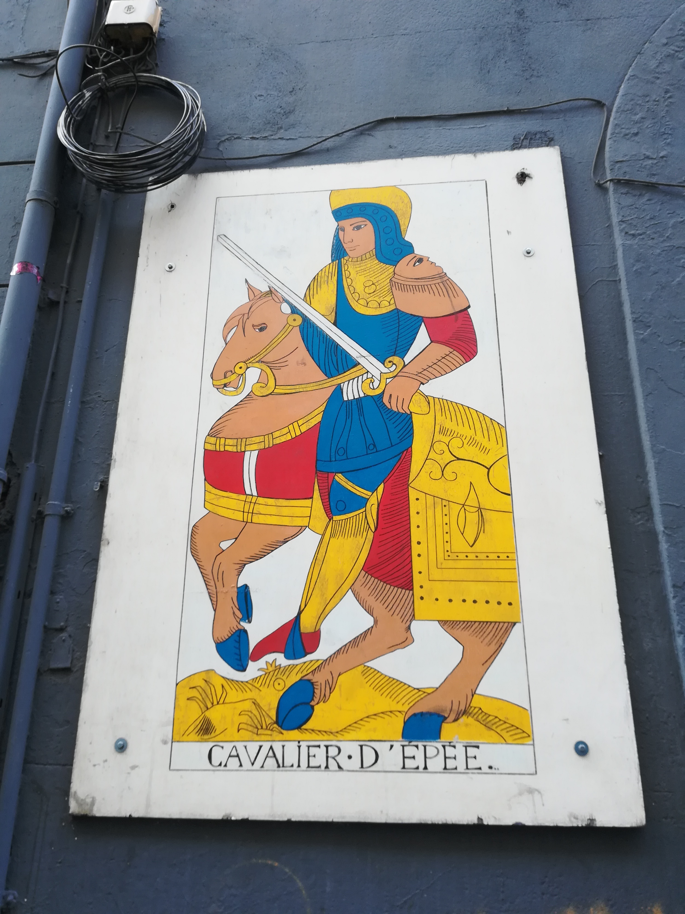
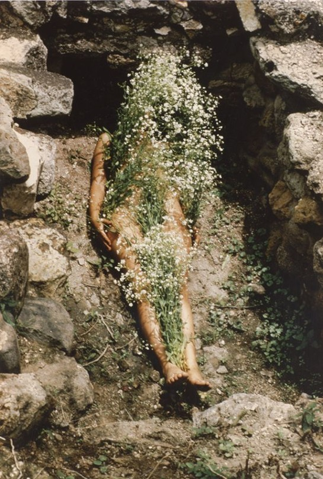
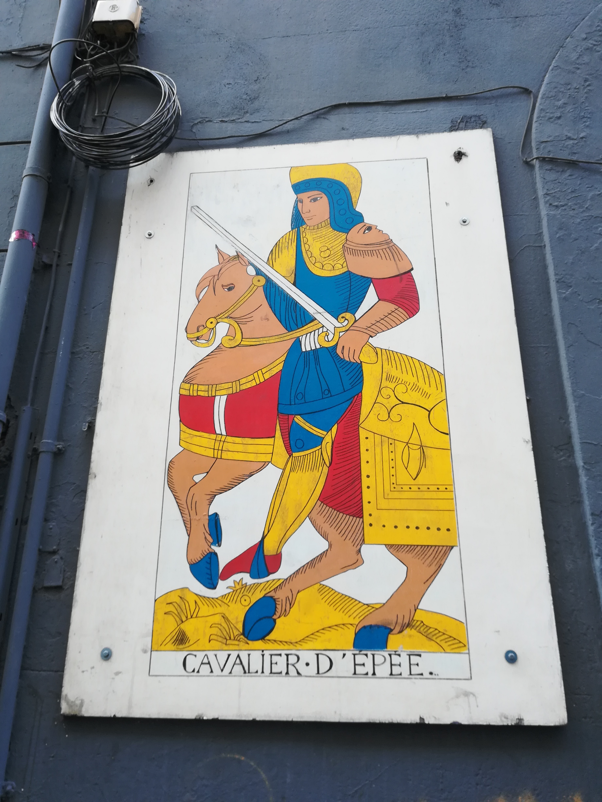
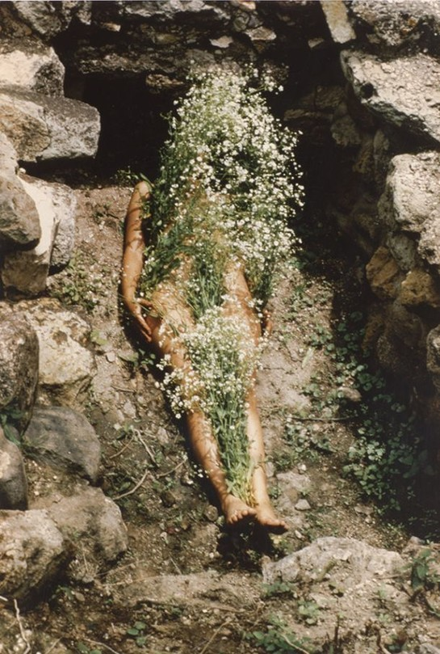


 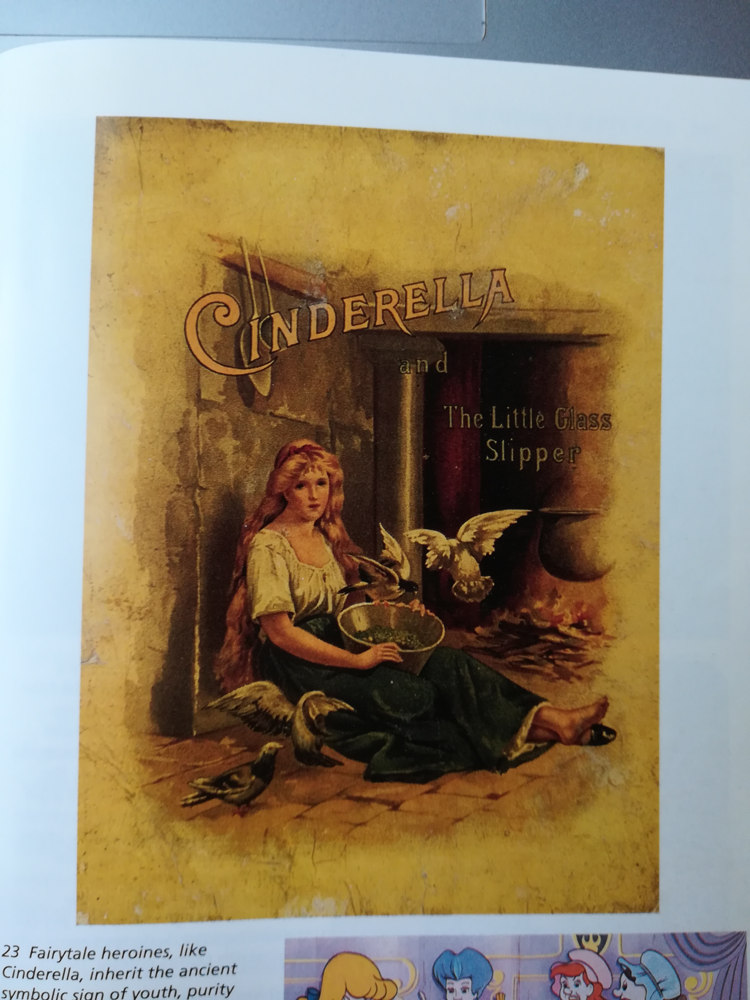
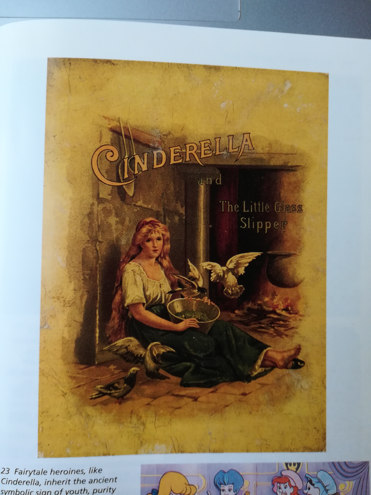
 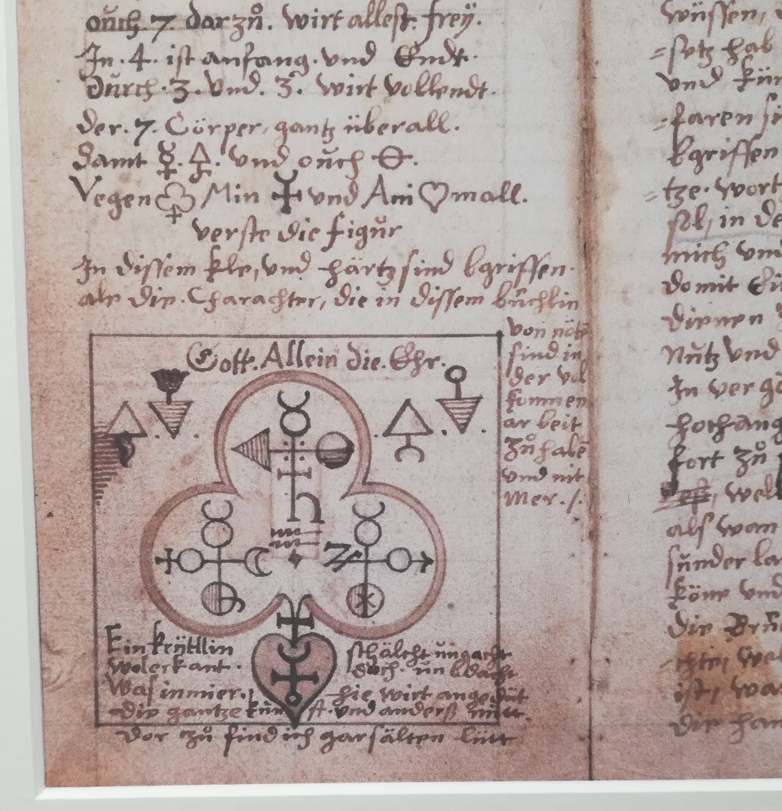
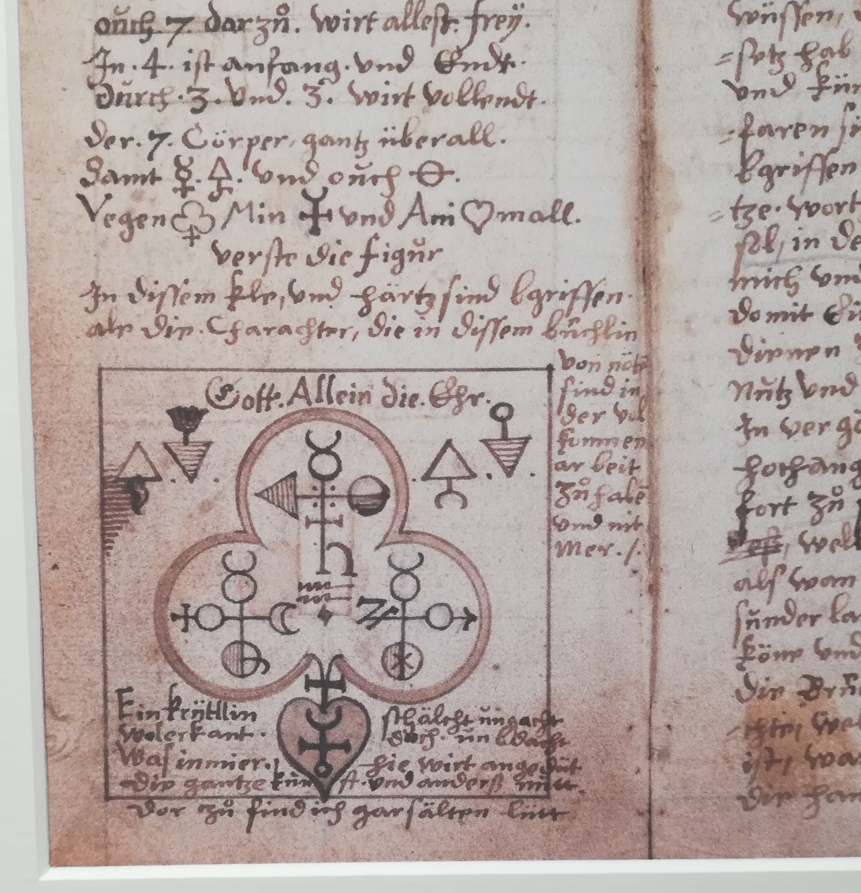
 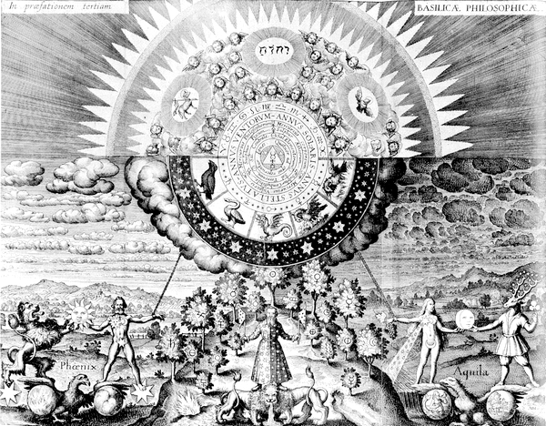
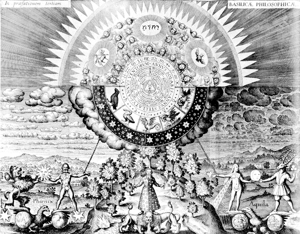
 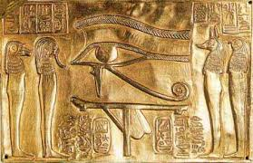
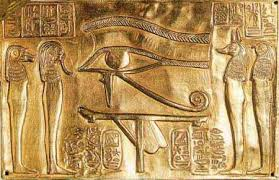